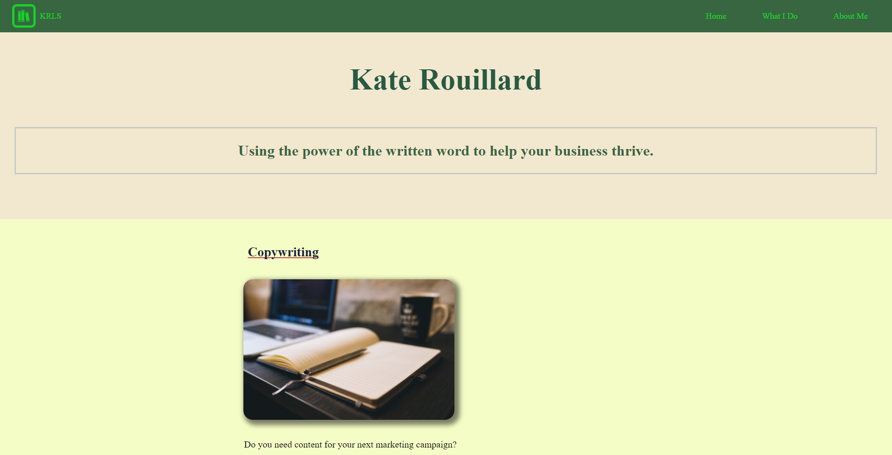

Hi, I'm Simon Ackerberg. Proudly South African, I currently reside in Durban. Thanks for checking out my page.
I am new to the tech industry and I am loving the ability to have an idea and turn it into reality. I am learning something new every day. A wise man once said, "The only constant is change", so I make sure I'm constantly learning.
I look forward to working for or with you 😄
Check out my GitHub below!
Designed and developed the website for freelancer Kate Rouillard. Simple static site displaying information about the different services she offers.
